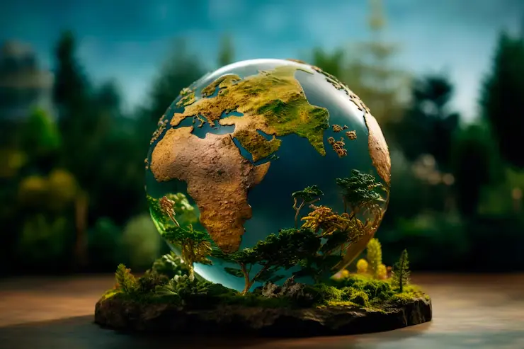

Capitulo 1
El planeta tierra como ecosistema
La Tierra se formó aproximadamente hace 4.550 millones de años a partir de la nebulosa proto solar, junto con el Sol y los demás planetas del Sistema Solar (Colebrook Michael, 2006). La Tierra ocupa el cuarto lugar en tamaño de los planetas del Sistema solar y es el tercero en orden de distancia con respecto al Sol. Los rasgos más destacados de Ia tierra son los siguientes:
- Es el único lugar del universo donde se ha confirmado hasta ahora que existe Vida.
- Ha evolucionado mediante procesos geológicos y biológicos.
- Su superficie externa se divide en litósfera e hidrósfera, donde la litósfera está fragmentada en una serie de placas que se desplazan sobre el manto terrestre y se sitúan principalmente en el hemisferio norte. La hidrósfera está constituida principalmente por los océanos.
- Su interior permanece activo, con una gruesa capa de materiales fundidos y un núcleo rico en hierro que genera un campo magnético.
¿Qué es el planeta Tierra?
El primer principio básico de la naturaleza establece que la Tierra es un ecosistema o sistema viviente caracterizado por ser finito, en homeostasis y sustentable.
La Tierra es un sistema viviente
La Tierra, llamada también Gaia, es un sistema viviente o ecosistema por sí mismo y esta característica está definida la interacción de los diversos ecosistemas acuáticos y terrestres que la integran y que al evolucionar mediante procesos geoquímicos (abióticos) y biológicos (bióticos) determinaron las condiciones iniciales apropiadas para el inicio de la vida y la posterior consolidación de la biosfera.

La Tierra es finita en espacio, recursos y sustentabilidad
La Tierra es un planeta finito, con el 70% de su superficie cubierta por agua, pero solo el 1% es agua dulce accesible, de la cual la humanidad usa el 54%. Sus recursos naturales se clasifican en permanentes o inagotables (energía solar, viento, mareas, suelo), agotables o no renovables (carbón, petróleo, suelo fértil) y renovables (agua, oxígeno, carbono, nitrógeno, plantas y animales), dependiendo de su disponibilidad y capacidad de regeneración.
La Tierra está en equilibrio u homeostasis
La Tierra, como ecosistema, mantiene la homeostasis regulando la temperatura, la composición atmosférica y la salinidad oceánica para favorecer la vida. Aunque las condiciones varían diariamente, estacionalmente y anualmente, los ecosistemas tienden a mantenerse estables dentro de un rango de tolerancia, pese a factores desestabilizadores como la competencia, las interacciones depredador-presa, la limitación de recursos y otros disturbios.
El segundo principio básico de la naturaleza establece que la Tierra es un sistema viviente, constituido por dos subsistemas: subsistema físico o ecosfera y subsistema biológico.
Subsistema físico
El subsistema físico de la Tierra está formado por atmósfera, hidrosfera y litosfera. La atmósfera actúa como una cubierta protectora que regula la temperatura terrestre y filtra la radiación solar dañina, permitiendo al mismo tiempo radiación esencial para procesos vitales como la fotosíntesis y el efecto invernadero. La hidrosfera abarca todas las formas de agua del planeta: líquida (océanos, mares, ríos y lagos), sólida (glaciares y casquetes polares) y gaseosa (vapor y gotas en la atmósfera). La litosfera es la porción sólida de la corteza terrestre, compuesta por materia orgánica e inorgánica, cuyo suelo proporciona el sustrato necesario para el desarrollo de la mayoría de los organismos terrestres.
Subsistema biológico
El subsistema biológico está compuesto por organismos productores, consumidores (primarios, secundarios y terciarios) y desintegradores, en los cuales ocurren interacciones bióticas y el flujo de materiales y sustancias orgánicas. Estas interacciones, combinadas con los procesos abióticos de la Tierra, dan lugar a la biosfera, un sistema ecológico autorregulado donde los seres vivos participan activamente en el intercambio de energía y materia. La biosfera se caracteriza por su complejidad, su amplia escala temporal y su distribución espacial extensa. Los elementos químicos circulan mediante ciclos biogeoquímicos, que presentan dos fases: una fase ambiental, donde los elementos se encuentran en forma inorgánica en el suelo, agua y aire; y una fase orgánica, en la que los elementos forman parte de los organismos vivos, incluyendo plantas y animales.